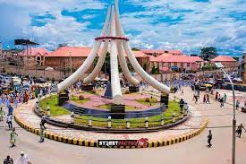

My favorite city is Awka in Anambra state, Nigeria. The city was declared capital on 21 August 1991, on the creation of a new Anambra state and Enugu state by bifurcation of the old Anambra State. The city of Enugu remained the capital of Enugu State while Awka (an administrative center since pre-colonial times) became the capital of the new Anambra State. The city has an estimated population of 301,657 as of the 2006 Nigerian census.
